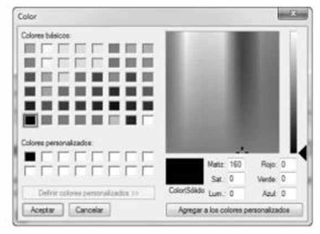
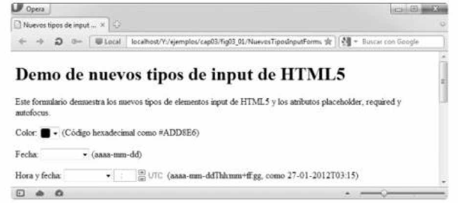
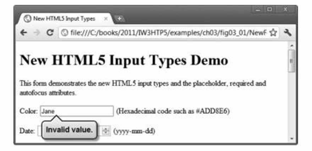

- El tipo input
color(pág. 80) permite al usuario introducir un color. - La mayoría de los navegadores despliegan el tipo input
colorcomo un campo de texto en donde el usuario puede introducir un código hexadecimal. - En el futuro, cuando el usuario haga clic sobre un tipo input
color, es probable que los navegadores muestren un cuadro de diálogo en donde el usuario podrá elegir un color. - El atributo
autofocus(pág. 80), que puede usarse sólo en un elemento input de un formulario, coloca el cursor en el campo de texto después de que se carga el navegador y despliega la página. No necesitamos incluir el elemento autofocus en nuestros formularios. - Los nuevos tipos input de HTML5 tienen validación automática del lado del cliente, con lo cual se elimina la necesidad de agregar código de JavaScript para validar la entrada del usuario y reducir la cantidad de datos incorrectos que se envían.
- Cuando un usuario introduce datos en un formulario y luego lo envía, el navegador verifica de inmediato si los datos son correctos.
- Si desea anular la validación, puede agregar el atributo
formnovalidate(pág. 82) al tipo inputsubmit. - Mediante el uso de JavaScript es posible personalizar el proceso de validación.


